Node icons indicate the status of the node:

Views in this perspective include the Machines view, and the Jobs view.
To populate the PTP Runtime perspective, you should have a program running. See launching parallel programs for how to launch a parallel program.
To open the PTP Runtime perspective, Select Window > Open Perspective > Other ... and Select PTP Runtime.
The PTP Runtime Perspective includes the Machines view and the Jobs view.
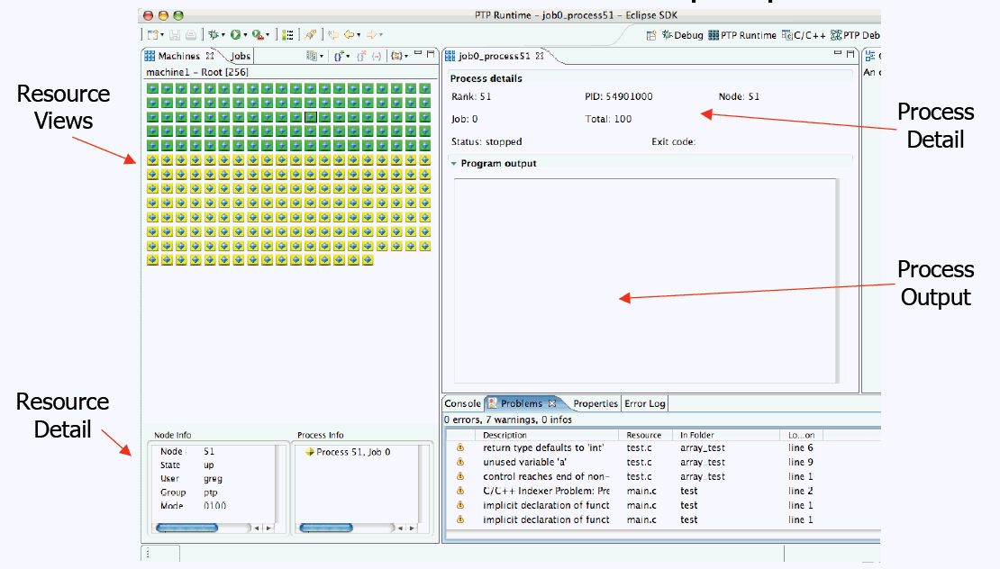
Select between the Machines or Jobs view.
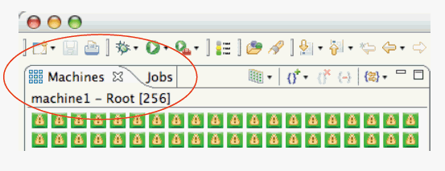
In the Machines view, an icon represents each node.
| 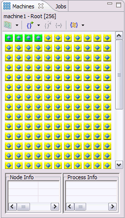 | Node icons indicate the status of the node:
|
Selecting a node: Double-click on a node icon to display the node information..
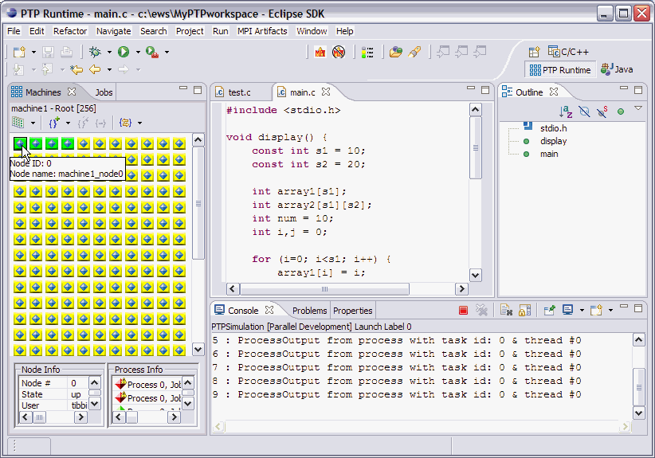
Close-up of node and process info displayed
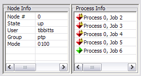
Switch between machines using the dropdown menu 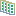 in the toolbar of the Machines view.
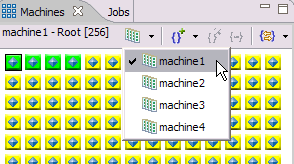
Node state icons:
Each node in the machines view is indicated by an icon.
The icons and their meanings are shown in the Legend dialog,
available from the
 legend icon in the toolbar.
legend icon in the toolbar.
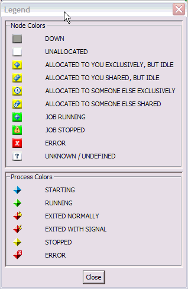
'Hover' information:
You can also see information on a particular node by hovering the
mouse pointer over a node.
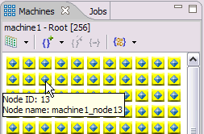
Node information:
To display information on a particular node, double-click
on the node icon and the Node info box
will be populated with information about that node.
Here the Node info box and the hover information on the node are
both shown.
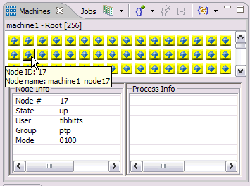
Processes running on a node:
While running, the process information is also shown:
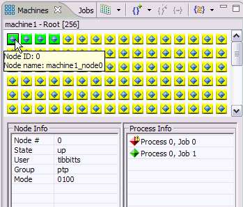
In the Jobs view, the current status of jobs is shown. Running and completed jobs are listed. The jobs are shown in the left pane, and the processes running in the selected job are shown in the right pane.
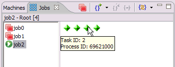
As shown above, hovering over a process shows the MPI task ID and process ID.
Again, the icons and their meanings are shown in the Legend dialog,
available from the
legend icon in the toolbar.
The Job and process icons are listed again here:
| Job status icon | Process state icon |
 Currently running job Currently running job
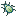 Job under debug Finished job |
process starting
process running 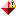 process exited normally 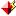 process exited with signal process stopped process error |
Selecting a job shows the processes belonging to the job.
The Terminate button can be used to kill a job.
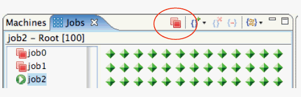
Selecting a process:
Double-clicking on a process in the right pane of the Jobs view
brings up a details view for that process.
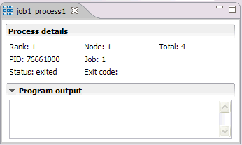
The process details page includes the following information:
The Program output window shows the standard output generated by this process. In the legend box above, the debug symbol is used to show that the job is being debugged (i.e. that the debugger has been launched for the job). It could be referred to as 'Job being debugged'.